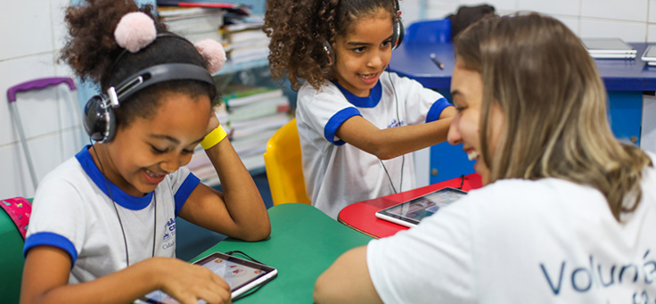
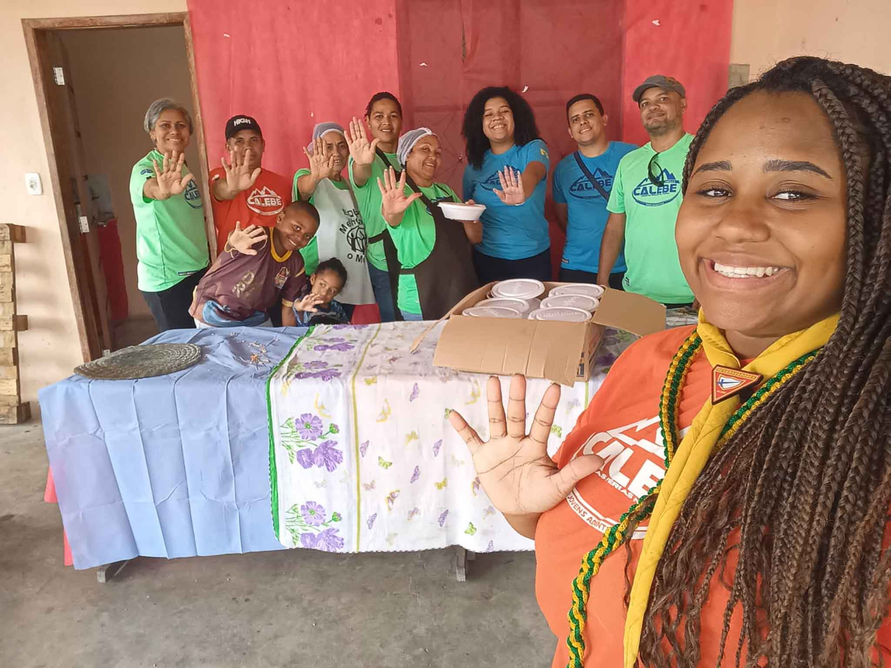
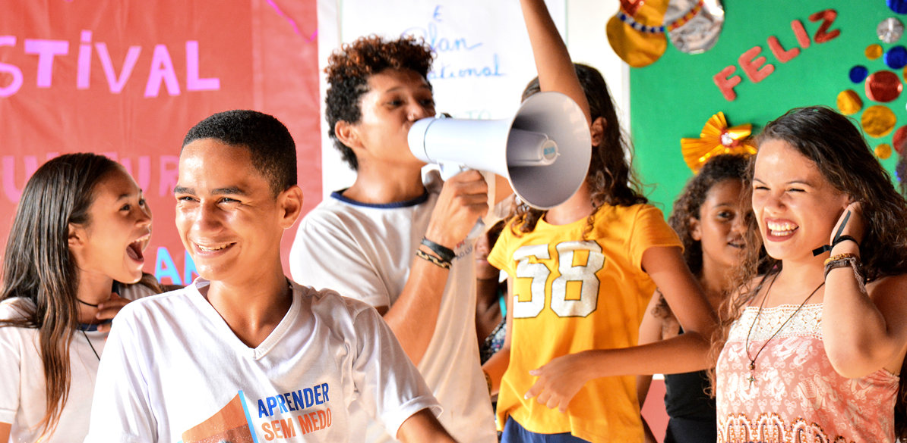

Conheça nossos projetos
A Mãos que Transformam desenvolve projetos sociais para pessoas em situação de vulnerabilidade.
Educação
Educação
Promovemos atividades educativas e ações de apoio para crianças e adolescentes.
Arrecadação de alimentos
Doação
Realizamos campanhas para arrecadar alimentos e distribuir cestas básicas para famílias que precisam.
Ações voluntárias
Voluntariado
Organizamos ações com voluntários para levar doações e atividades para diferentes comunidades.
Como ajudar
Você pode contribuir com nossos projetos por meio de doações ou participando como voluntário.